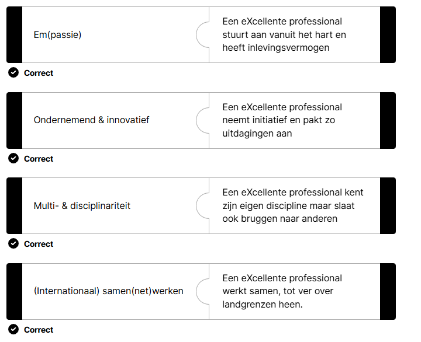

Intro
Ik ben Ali Haidari, eerstejaars programmeur aan Hogeschool PXL. In dit portfolio laat ik zien wat ik tijdens mijn werkplekleren heb gemaakt en geleerd: van een visueel Scratch-spel en Gitrepository tot een responsieve HTML/CSS-website en een complete C# Wordle-applicatie. Elk project leerde me logisch denken, zelfstandig werken en doorzetten bij uitdagingen. Met deze ervaringen wil ik als leergierige IT-professional waarde toevoegen aan elk team en elke opdracht. Tijdens het ontwikkelen van de Wordle-app ontdekte ik het belang van testen en feedback verwerken om de gebruikerservaring te optimaliseren. In de toekomst wil ik mijn kennis uitbreiden door nieuwe programmeertalen te verkennen en bij te dragen aan innovatieve en maatschappelijke projecten.
CV

Logboek
Planning Werkplekleren EEN
| Leesweek | Inhoud | Deadline |
|---|---|---|
| Week 1 | Introductie WPL Scratch Uitleg PE1 (Scratch) | |
| Week 2 | GIT Github POP intro, X-factor en SDG's POP motivatie en kernwaarden Oriënteringstraject | |
| Week 3 | POP reflecteren POP autonomie en verantwoordelijkheid Versioning met GIT Uitleg PE2 (GIT taak 1) Uitleg PE3 (reflecteren) | PE1 (Scratch) |
| Week 4 | LDB test GIT POP personal branding POP plannen en organiseren Uitleg PE4 (plannen) Uitleg PE5 (GIT taak 2) | PE2 (GIT taak 1) PE3 (reflecteren) |
| Week 5 | Uitleg portfolio Gastspreker(s) + LDB test Uitleg PE6 (carrièrecompas) | PE4 (plannen) PE5 (GIT taak 2) |
| Week 6 | POP leren analyseren van projecten GIT merge Uitleg web project sprint 1 | PE6 (carrièrecompas) |
| Week 7 | Herfstvakantie | |
| Week 8 | Uitleg C# project sprint 1 | |
| Week 9 | C# documentatie + debugging maandaggroep (ABC) les valt weg | Indienen C# project sprint 1 |
| Week 10 | PE7 C# project sprint 1 Uitleg C# project sprint 2 | |
| Week 11 | Uitleg web project sprint 2 PE8 C# debugging | Indienen C# project sprint 2 |
| Week 12 | PE9 C# project sprint 2 Uitleg C# project sprint 3 | |
| Week 13 | Introductie Corda Campus Uitleg web project sprint 3 LDB Codebeoordeling | Indienen C# project sprint 3 |
| Week 14 | PE10 C# project sprint 3 Vragen portfolio Infosessie Thalento | PE11 (web project) |
| Week 15 | Kerstvakantie | |
| Week 16 | Kerstvakantie |
Ontwikkeling
Keuze opleiding:
Ik vind automatisering noodzakelijk voor ons leven. Machines kunnen heel nuttig en behulpzaam zijn, maar we moeten leren ze op de juiste manier te gebruiken. Door automatisering gaan wetenschap, economie en daardoor de hele maatschappij sneller en efficiënter vooruit. Automatiseren is alleen mogelijk als we machines goed leren kennen. Daarmee bedoel ik dat we als mensen moeten begrijpen hoe een machine denkt en waarom het zo werkt. Een machine denkt altijd logisch en precies, terwijl wij dat niet altijd doen. Daarom is het belangrijk om de verbinding tussen mens en machine op de juiste manier te leggen. Dit gebeurt door mensen die de taal van machines kennen: programmeurs. Met die gedachte ben ik in deze richting terechtgekomen. Ik wil deel uitmaken van dit proces en helpen bij het evalueren en verbeteren ervan. Bovendien ben ik creatief en houd ik ervan innovatieve ideeën via programmeren tot leven te brengen. Ik geloof dat creativiteit de drijvende kracht is achter ITuitvindingen, zoals de oprichting van Facebook door Mark Zuckerberg in 2004, toen hij een creatief, leuk platform voor studenten bouwde. Ik kan goed logisch nadenken en programmeer sinds mijn vijfde jaar op de middelbare school. Ik ben serieus en toegewijd aan deze richting.
Competenties programmeur:
Ontwerper:
De gegradueerde bereidt de realisatie van een softwareproject voor. De gegradueerde maakt op basis van de analyse een onderbouwd voorstel voor a) het ontwerp, b) de programmeertaal en c) de methodiek. De gegradueerde stemt het voorstel af met de softwareontwikkelaar, analist en/of projectleider.
Programmeur:
De gegradueerde realiseert softwareapplicaties en gegevensstructuren. De gegradueerde werkt hierbij planmatig binnen de context van het projectplan, de beschikbare tools en de vooropgestelde methodiek. De gegradueerde is medeverantwoordelijk voor de eigen digitale werkomgeving en draagt bij tot de gedeelde infrastructuur nodig voor het ontwikkelen, testen en in productie brengen van projecten. De gegradueerde programmeert softwaretoepassingen volgens de standaarden en afspraken binnen de organisatie. De gegradueerde gaat in overleg met de softwareontwikkelaar, analist en/of projectleider na of het opgeleverde product onderhoud en/of aanpassingen nodig heeft. De gegradueerde voert het onderhoud en de aanpassingen op een projectmatige manier uit, rekening houdend met eerder gemaakte afspraken.
Tester:
De gegradueerde gaat volgens testscenario’s de werking en functionaliteit van de gerealiseerde code na en verbetert deze op basis van feedback van de softwareontwikkelaar, analist, projectleider en/of gebruikers.
Communicator/Teamspeler :
De gegradueerde werkt constructief en actief samen in een multidisciplinair team en participeert actief tijdens overlegmomenten. De gegradueerde zoekt mee naar oplossingen om problemen te vermijden. De gegradueerde communiceert en rapporteert efficiënt over het geleverde werk, aangepast aan het doelpubliek en gebruikt hiervoor het gepaste Engelstalige vakjargon. De gegradueerde documenteert de zelf ontwikkelde applicaties op een adequate en overzichtelijke manier gebruikmakend van een kennisdatabank en volgens de afspraken binnen de organisatie. De gegradueerde geeft kwalitatieve input voor de gebruikershandleidingen, referentiegidsen en online hulpbronnen.
Levenslang lerende IT-Professional:
De gegradueerde onderhoudt zijn deskundigheidsniveau door relevante duurzame IT- en maatschappelijke ontwikkelingen actief op te volgen. De gegradueerde is zelfkritisch, ontwikkelt de nodige zelfkennis en gebruikt deze om zijn persoonlijke en professionele groei te bevorderen. De gegradueerde handelt deontologisch en duurzaam, en houdt rekening met de veiligheids- en privacyrichtlijnen.
Competenties programmeur (deel 2)
Ontwerper
Waar sta ik momenteel ?
Ik ontwerp al sinds het middelbaar. Ik ben geen beginner meer en kan goed nadenken over structuur en visuele opbouw. Mijn creativiteit helpt me daarbij. En bovendien kan ik ook voor goede ontwerp voorbeelden ideeën opzoeken.
Wat lukt je al goed?
Ik kan een gebruiksvriendelijke en responsieve lay-out ontwerpen die past bij de doelgroep. Mijn werkplekleren-website (web project) is hier een voorbeeld van.
Wat lukt je nog niet?
Ik heb soms moeite met complexe CSS. Omdat kleine fouten kosten veel tijd om op te lossen.
Drie concrete voorbeelden:
Structuur uitdenken voor mijn website (web project) → dit hoort bij de rol van ontwerper, omdat ik besliste waar welke info kwam en hoe de pagina werd opgebouwd. Kleuren en lettertypes kiezen → hoort bij ontwerper, want ik zorgde voor een visueel aantrekkelijke en toegankelijke stijl. Responsief ontwerp maken met media query’s → dit is typisch voor de rol van ontwerper, omdat ik moest nadenken over het gebruik op mobiel en desktop.
Programmeur
Waar sta ik momenteel ?
Programmeren is voor mij meer dan alleen code schrijven. Het gaat om efficiëntie: herhaling vermijden en de applicatie soepel laten werken. Ik denk creatief en kan vaak een unieke, korte oplossing vinden. In talen zoals C# lukt het me om die ideeën om te zetten in werkende code. Bij mijn Wordle-project heb ik dit toegepast en een werkende applicatie opgeleverd. Bij dit onderdeel moest ik ook regelmatig zaken opzoeken, en daardoor heb ik echt veel bijgeleerd.
Wat lukt je al goed?
Ik vind vaak snel de juiste aanpak. In mijn JavaScript-code voor het web-project en in mijn C# Wordle-project kon ik de logica in mijn hoofd meestal goed omzetten in werkende code.
Wat lukt je nog niet?
Ik heb nog moeite met het verbinden van front-end en backend. In mijn Wordle-project werkte sommige functionaliteit niet goed, hoewel de backend juist geschreven was. De fout lag in de integratie met de front-end.
Drie concrete voorbeelden:
C# code schrijven voor het Wordle-project → hoort bij de rol van programmeur, omdat ik de volledige applicatielogica heb opgebouwd. JavaScript gebruiken voor functionaliteit in mijn web project → dit is programmeren, omdat ik gedrag toevoegde aan mijn website via code. Backend functionaliteit uitwerken en debuggen → past bij programmeur, want ik werkte aan logica, foutopsporing en data-afhandeling
Tester
Waar sta ik momenteel ?
Testen lijkt mij minder moeilijk wanneer je ook programmeur bent, omdat je dan inzicht hebt in wat er op de achtergrond gebeurt. Door mijn Wordle-project in C# en mijn webproject te testen, ontdekte ik dat ik een volledige applicatie of website op functionaliteit kan testen en fouten kan opsporen. Zo heb ik mijn projecten stap voor stap verbeterd.
Wat lukt je al goed?
Ik kan elke functie van een applicatie of website individueel testen en kort documenteren. Door elke functie van het Wordle-project afzonderlijk te testen, begreep ik beter waar fouten zaten en kon ik die oplossen.
Wat lukt je nog niet?
Een volledig testdocument schrijven met alle scenario’s, resultaten en oorzaken vind ik nog complex. Daardoor werkt sommige kleinere functionaliteit van mijn Wordle-project niet goed, omdat ik de echte oorzaak niet kon achterhalen.
Drie concrete voorbeelden:
Functionaliteit testen in het Wordle-project → hoort bij de rol van tester, omdat ik systematisch functies controleerde op fouten en de resultaten door gaaf (in dit geval aan mij zelf ook als programmeur) en verbeterde. Fouten opsporen en oplossen in het webproject → past bij de rol van tester, want ik analyseerde de werking en voerde verbeteringen door omdat ik ook zelf de programmeur was maar in echte scenario moet ik dit documenteren aan team programmeur. Testresultaten documenteren → hoort bij de rol van tester, omdat ik de uitgevoerde tests en hun uitkomsten nauwkeurig heb vastgelegd. Maar in de geval voor me zelf omdat ik zelf alle rollen spel.
Communicator/teamspeler
Waar sta ik momenteel ?
Ik hecht veel waarde aan samenwerking: een IT-medewerker moet zijn kennis kunnen delen en actief overleggen. Tijdens school- en stageprojecten heb ik hier voortdurend aandacht voor gehad. Hoewel we op mijn werkplekleren niet in groepen werkten, overlegde ik wel met lectoren en vroeg ik regelmatig om feedback. Tijdens mijn stage bij Appsaloon (2019) en groepsprojecten in projectmanagement communiceerde ik altijd helder en hield ik deadlines aan. Soms hielp ik medestudenten, soms vroeg ik zelf om hulp.
Wat lukt je al goed?
Ik communiceer duidelijk en ben stipt wat deadlines betreft. Ik maak een haalbare planning en stem die af met collega’s. Bij de permanente evaluatie van projectmanagement heeft dit me een hoge score opgeleverd in een team van vier.
Wat lukt je nog niet?
Ik ben minder flexibel zodra de planning en deadline zijn vastgesteld. Bij onze laatste PE van Security Essentials (tweede jaar GPRO) miste ons team de deadline, omdat een medestudent zonder waarschuwing zijn deel niet had afgemaakt. Daardoor moesten we in de laatste uren veel werk inhalen.
Drie concrete voorbeelden:
Overleg met lectoren en continu feedback vragen → past bij communicator, omdat ik actief informatie deelde en verbeterpunten ophaalde. Stage bij Appsaloon (2019) → hoort bij teamspeler, want ik communiceerde helder binnen het bedrijf en hield deadlines aan. Groepswerk permanente evaluatie projectmanagement → past bij teamspeler, omdat ik mijn planning besprak en in een team van vier succesvol samenwerkte.
Levenslang lerende IT-Professional
Waar sta ik momenteel ?
Ik ben al sinds het vijfde jaar van de middelbare school bezig met programmeren. Na twee jaar bachelor ervaring weet ik dat de IT-wereld sneller verandert dan andere sectoren. Daarom vind ik het cruciaal om mijn programmeerkennis continu up-to-daten. Ik volg nieuwe IT-innovaties en oefen elke dag door schoolprojecten af te ronden. Daarnaast ontwikkel ik een eigen vastgoedwebsite, waardoor ik sneller leer. Omdat je niet alle code uit je hoofd kunt kennen, houd ik al mijn cursussen en aantekeningen bij de hand en herlees ik ze regelmatig.
Wat lukt je al goed?
Ik rond zelfstandig projecten af waarvan ik zelf de doelstellingen heb opgesteld om mijn IT-vaardigheden te onderhouden en te verbeteren. Zo leer ik elke dag nieuwe technieken.
Wat lukt je nog niet?
Ik kan nog geen beknopte samenvatting van mijn code maken om snel te herhalen, waardoor ik vaak de volledige cursussen opnieuw moet doorlezen, wat veel tijd kost.
Drie concrete voorbeelden:
Dagelijks afronden van schoolprojecten → hoort bij levenslang leren, omdat ik zo mijn vaardigheden structureel oefen en verbeter. Bijhouden en regelmatig herlezen van al mijn cursussen → past bij zelfkritisch handelen en het opbouwen van noodzakelijke zelfkennis. Ontwikkelen van een eigen vastgoedwebsite → sluit aan bij het actief volgen van ITontwikkelingen en het toepassen daarvan in de praktijk.
opdrachten
1. Scratchproject
a. Beschrijving:
Een spel in Scratch maken om te leren hoe machinetaal werkt. In deze opdracht wordt een visueel spel gemaakt waarin een bal naar random punten in de bodem en top van het tabblad beweegt. Het spel moet ervoor zorgen dat de bal door een paal wordt gecontroleerd zodat de bal de bodem niet raakt. Er worden scores en levels geüpdatet telkens wanneer de bal de paal raakt. Hoe verder het spel gaat, hoe sneller de bal beweegt.
b. Uitdaging:
Ik had nog geen ervaring met hoe de logica van dit spel eruit moest zien, want dit is hetzelfde als code schrijven, maar dan visueel. Ik wilde aan de hand van mijn eigen logica dit spel maken, maar dat lukte niet omdat mensen niet op dezelfde manier denken als de machine. Toen ik begon op te zoeken wat 'if', 'else' of andere condities in de praktijk betekenen, kon ik dit sneller oplossen.
c. Bijgeleerd:
Ik heb geleerd dat er altijd een oplossing voor elk probleem bestaat als we op de juiste manier leren zoeken.
2. Git taak 1
a. Beschrijving:
Op GitHub moet er een repository worden aangemaakt en er moet gecommit worden voor elke vereiste. De code van de vereisten moet in de bijbehorende commit genoemd worden
b. Uitdaging:
Ik had nog geen ervaring met GitHub, en als er een probleem buiten de scope van de leerstof was, kon ik het niet oplossen.
c. Bijgeleerd:
Uit deze opdracht heb ik geleerd dat ik belangrijke code van buitenaf moet kennen.
3. Oriënteringstraject
a. Beschrijving:
Als eerstejaarsstudent moeten wij onder deze opdracht een oriëntatietest doen. Hierdoor wordt de student beter leren kennen en wordt nagegaan of de student voldoende leer- en begrip-conditie heeft om deze opleiding aan te kunnen gaan.
b. Uitdaging:
Het was een lange test, sommige vragen begreep ik niet goed en daarvoor moest ik opzoeken.
c. Bijgeleerd:
Door deze test af te leggen heb ik mijn leervaardigheden beter leren kennen. Ik weet nu wat mijn plus- en minpunten zijn om deze opleiding te beginnen, en ik heb geleerd waar ik hulp kan vragen bij een probleem.
4. POP AIM-reflectie op scratchproject
a. Beschrijving:
Onder deze opdracht moeten wij aan de hand van het AIM-reflectiemodel onze voornaamste (Scratch-opdracht) reflecteren.
b. Uitdaging:
Het was moeilijk om te begrijpen wat mijn zwaktes en obstakels waren op basis van het AIM-model in deze opdracht.
c. Bijgeleerd:
Ik heb geleerd het AIM-model in de praktijk toe te passen en uit te voeren.
5. Git Permanente evaluatie
a. Beschrijving:
Gewettigd afwezig tijdens deze permanente evaluatie
b. Uitdaging:
c. Bijgeleerd:
6. Git taak 2 Web
a. Beschrijving:
Er moet een eenvoudige webpagina in HTML en CSS op basis van de vereisten gecorrigeerd worden. Elke correctie is een deelopdracht die afzonderlijk gecommit moet worden naar de repository op GitHub van Classroom.
b. Uitdaging:
Het was een eenvoudige opdracht, ook omdat wij al ervaring hadden met het gebruik van GitHub en Git Bash. Er waren minder obstakels. Toch was het een beetje moeilijk om de juiste lay-out volgens de vereisten te maken in zo'n korte tijd.
c. Bijgeleerd:
Ik heb geleerd dat er veel verschillende mogelijkheden zijn met CSS en HTML. Hierdoor kunnen wij een opdracht met dezelfde vereisten op verschillende manieren oplossen. Bijvoorbeeld, ik heb in mijn HTML-code in plaats van een 'ul' een 'ol' gebruikt om deze tabel op de juiste manier te maken.
7. Wereldverkenning, carrierkompas
a. Beschrijving:
Onder de opdracht Carrierkompas maken wij een tienjaarplanning voor onze carrièretoekomst. Het doel wordt duidelijk beschreven voor de komende tien jaar als carrière. Om dit doel te bereiken, hebben wij een aantal hulpmiddelen, zoals tussenstappen, vacatures en de nodige skills. Dit alles moet met praktische voorbeelden beschreven worden.
b. Uitdaging:
Het is moeilijk om de komende tien jaar te voorspellen, omdat de veranderingen en vooruitgangen in technologie zo snel gaan dat het bijna onvoorspelbaar is. Een recent voorbeeld is de opkomst van AI, wat ik als een bedreiging zie voor mijn toekomstige carrière.
c. Bijgeleerd:
Het was een belangrijke taak om te weten waar ik naartoe ga op het vlak van mijn carrière. Door deze opdracht heb ik meer zicht gekregen op mijn carriertoekomst.
8. C# project Wordle-1
a. Beschrijving:
Tijdens dit project zullen we het spel WORDLE in C# bouwen in 3 fasen. Hiermee zullen we de competenties rond C# en WPF verder uitdiepen. Ik zal uitgedaagd worden om mijn kennis te verbreden door zelf aan de slag te gaan en informatie op te zoeken over hoe ik de verschillende programmeervereisten zou implementeren. Voor de Wordle-1 moeten we een spel maken waarbij een vast vijfletterwoord wordt gekozen en de speler dit binnen 6 pogingen raadt. Feedback: grijs (niet in het woord), geel (in het woord, verkeerde plek), groen (in het woord, juiste plek). We moeten eerst focussen op invoer, controle en feedback, en daarna een resetknop toevoegen
b. Uitdaging:
Het was de eerste uitgebreide C#-opdracht. Ik moest veel opzoeken. Veel van de code die ik hiervoor moest schrijven, hadden wij zelfs nog niet gezien in onze cursus, dus het was vooral veel zoekwerk. De invoer van woorden letter per letter was een extra uitdaging. Hiervoor heb ik uren gezocht naar hoe ik de letter van het toetsenbord kan inlezen en van elke vijf ingevoerde letters een woord kan maken.
c. Bijgeleerd:
De toetsenbordinvoer kunnen we inlezen door een event voor elke ingevoerde toets te implementeren en elke letter daarna toe te voegen aan een array van strings of een StringBuilder.
9. C# project Wordle-1-PE
a. Beschrijving:
In deze korte uitbreiding implementeren we debug-ondersteuning voor het project. We voegen onder andere een debug-modus toe, een timer om de oplostijd bij te houden, een voorspel-teller en een knop om een nieuw spel te starten. Deze uitbreidingen moeten helpen bij het testen van de applicatie. Deze uitbreiding implementeren we op het Wordle-project in C#.
b. Uitdaging:
Het was moeilijk om deze kleinere toepassingen in mijn lange code te implementeren. Bijvoorbeeld, ik moest eerst veel in mijn eigen geschreven code zoeken om te vinden waar ik deze toepassingen moest schrijven, wat vaak voor fouten in de hele code zorgde. Ik had ook moeite om de instructies snel te begrijpen en de oplossingen te schrijven, omdat we dit binnen een beperkte tijd in de klas moesten doen.
c. Bijgeleerd:
Door deze eerste permanente evaluatie heb ik geleerd dat ik bij dit soort testen, waarbij we lange code moeten schrijven, gewoon de instructies op volgorde moet volgen en schrijven wat ik weet, terwijl ik mijn tijd nuttig gebruik. Er waren dingen die ik wel kon, maar ik schreef ze niet omdat ik niet aan die opdrachten toekwam; ik wilde alle opgaven afwerken, zelfs degene die ik niet zou kunnen.
10. C# project Wordle-2
a. Beschrijving:
In deze opdracht werken we aan uitbreidingen en aanpassingen van het spel (Wordle-project) zonder de eerste versie te overschrijven. Het geheime woord wordt willekeurig gekozen, eerdere pogingen blijven zichtbaar met feedback, en de speler (gebruiker) heeft 6 pogingen. Een "Volgend woord"-knop reset het spel met een nieuw woord. Arrays worden gebruikt om een verzameling vijfletterwoorden op te slaan.
b. Uitdaging:
Het was moeilijk om de invoer automatisch naar het volgende vijfletterwoord te laten gaan, en de schaalbaarheid van het venster is me helemaal niet gelukt. Omdat ik dit niet in het begin van het spel had gedaan, veroorzaakte dit veel fouten. Uiteindelijk heb ik dit deel niet opgelost.
c. Bijgeleerd:
Door dit projectdeel (sprint 2) heb ik geleerd hoe ik automatisch de invoer van het toetsenbord of het virtuele toetsenbord kan inlezen en naar de volgende invoer kan gaan. In dit deel heb ik ook meer over de WPF-controles geleerd, hoewel ik de schaalbaarheid toch niet kon oplossen.
11. C# project Wordle-2-PE
a. Beschrijving:
In dit deel van het project moet ik de methoden AddLetterToGreens, AddLetterToYellows en AddLetterToGreys gebruiken om letters toe te voegen aan specifieke groepen: groene, gele en grijze letters. Elke groep heeft een maximale grootte, en letters mogen niet dubbel voorkomen. Als een gele letter groen wordt, moet ik deze uit de gele groep verwijderen met RemoveLetterFromYellows. Dit zorgt ervoor dat de letter in de juiste groep zit. De letters in de groepen moeten altijd uniek zijn en in alfabetische volgorde worden weergegeven in het debug-menu, dat volledig zichtbaar moet blijven. Ik voeg tooltips toe aan toetsen van het virtuele toetsenbord, zodat de kleurcodes duidelijk worden uitgelegd. Ook houd ik bij hoeveel pogingen er zijn gedaan door de statusbalk te updaten na elk woord.
b. Uitdaging:
In plaats van de uitvoer in het bestaande debug-menu te doen, heb ik een apart tweede debug-menu gemaakt, met andere woorden, een apart label toegevoegd voor deze uitvoer. Dit was nodig omdat de invoer van dit deel voor veel fouten zorgde in het bestaande debug-menu (label).
c. Bijgeleerd:
Ik heb interessante technieken geleerd, bijvoorbeeld hoe ik van mijn invoer twee of drie aparte stringgroepen kan maken en deze vervolgens in drie groepen kan weergeven, zoals groen, geel en grijs.
12. C# project Wordle-3
a. Beschrijving:
In Sprint 3 ligt de focus op het implementeren van een businessmodel. Hiervoor gaan we de speler motiveren om 'gems' te kopen en de speler uitdagen om een hoogste score te behalen (met behulp van gekochte gems). De applicatie bevat nu een betalingssysteem waarbij spelers gems kunnen kopen en uitgeven voor voordelen, zoals hints en hogere scores. Daarnaast kan je de extra uitdaging aangaan om een nieuwe moeilijkheidsgraad (hard-mode) en verschillende woordlengtes te implementeren. Het scoremechanisme motiveert strategisch spelen, terwijl de hard-mode extra uitdaging biedt voor gevorderde spelers.
b. Uitdaging:
Het implementeren van de hard-mode was moeilijk, omdat er weinig uitleg was in de instructie (opgave), en de tekstinstructie kwam niet goed overeen met de bijbehorende beelden. Bijvoorbeeld, op de afbeelding (figuur 16) staat een input MessageBox, maar in de tekst wordt een input dialog window gevraagd.
c. Bijgeleerd:
Door deze sprint heb ik nieuwe vaardigheden geleerd, zoals het openen van een nieuw dialoogvenster via een knop, wat een nieuwe ervaring voor me was. Ook heb ik geleerd hoe een betalingssysteem zou kunnen werken, hoewel het geen echt betalingssysteem was, heb ik nu een beter inzicht in hoe een echt betalingssysteem eruit zou kunnen zien.
13. C# project Wordle-3-PE
a. Beschrijving:
In deze laatste toepassing van het WORDLE-project moeten we een functie inbouwen die het totaal aantal ooit gekochte gems toont in het debug-menu, en vervolgens de gemiddelde hints per correct geraden woord. We moesten ook de transactiegeschiedenis tonen in een apart venster. In deze transactie worden alle acties getoond, van gems kopen tot betalingen voor hints, inclusief het bedrag dat betaald is voor elke hint.
b. Uitdaging:
De gemiddelde betaalde hints per correct geraden woord was een echte uitdaging, omdat ik hiervoor gegevens van verschillende methoden moest verzamelen en vervolgens de berekening moest maken.
c. Bijgeleerd:
Ik heb geleerd hoe ik gegevens van verschillende methoden kan verzamelen en daarop acties kan uitvoeren, zoals het berekenen van de gemiddelde hints per correct geraden woord.
14. Reflectie gastsprekers
a. Beschrijving:
Voor het permanente evaluatie ‘Reflectie gastspreker’ moet ik een gastspreker beoordelen aan de hand van de methoden die wij tijdens de reflectie en persoonlijk ontwikkelingsplan hebben geleerd.
b. Uitdaging:
Vooral het is moeilijk om iemand te boordelen, in elke toestand en situatie, Ik was had minder zelfvertrouwen in of ik de spreker zijn/haar bedoeling correct heb geleerd of niet.
c. Bijgeleerd:
AIM methodologie in praktijk toepassen.
15. PE foutopsporing
a. Beschrijving:
In dit project voor een lokale pizzazaak moet ik zorgen dat de applicatie stabiel en gebruiksvriendelijk werkt door verschillende problemen op te lossen. Zo voorkom ik dat de applicatie crasht bij ongeldige acties, foutieve invoer of ongeldige leverdata. Ik zorg ervoor dat foutmeldingen helder zijn en de gebruiker niet onnodig verder kan gaan. Daarnaast werk ik aan correcte validatie en weergave van data zoals telefoonnummers, leverdata en bedragen, inclusief een munteenheid en afronding. Functies zoals het toevoegen van toppings of doorgaan in het menu maak ik gebruiksvriendelijker en logischer. Tot slot zorg ik ervoor dat de gebruiker steeds terugkeert naar het hoofdmenu na een bestelling.
b. Uitdaging:
De code is heel professioneel en moeilijk geschreven. Ik had weinig inzicht in de geschreven code, waardoor ik niet goed begreep wat het probleem echt was en hoe ik het moest oplossen
c. Bijgeleerd:
Deze taak heeft een grote positieve invloed gehad op hoe ik mij in de toekomst moet voorbereiden om code te begrijpen en de debug-functionaliteit te gebruiken, zodat ik de fouten kan vinden in code die door anderen is geschreven.
16. PE-Codebeoordeling
a. Beschrijving:
Door geleerde vaardigheden en kennis in programmering moeten wij deze opdracht een aantal geschreven code in HTML, CSS en C# begrijpen en beoordelen, er zijn open en meerkeuze vragen.
b. Uitdaging:
Ik kon niet weten of ik het juiste heb beoordeeld of niet omdat dit een test op papier (in lockdown browsers) was, in software zoals Webstorme of Visual studio kunnen het na gaan door de programma of web toepassing te runnen om de resultaat te zien.
c. Bijgeleerd:
Uitgaande of deze test goed of slecht is gegaan maar ik he geleerd hoe moet leren logisch (zoals een machine) denken,
17. Web project
a. Beschrijving:
Voor het deel van het webproject moet ik een CV-website maken om mezelf professioneel voor te stellen aan potentiële werkgevers. Hiervoor bouw ik een desktopversie die minimaal een introductie, een professionele foto, mijn diploma’s, vaardigheden, talenkennis en werkervaring bevat. Ik mag extra informatie toevoegen als ik dat passend vind. Ik gebruik HTML voor de structuur en CSS voor de stijl, zonder libraries of inline CSS. De website maak ik volledig responsief, zodat deze goed oogt op alle schermformaten. Hiervoor gebruik ik media-queries in de CSS om ontwerpen te tonen op basis van de schermbreedte, zoals <= 480px voor mobiel en > 480px voor desktop. Het ontwerp bepaal ik zelf, omdat er geen specifieke UI-vereisten zijn. Uiteindelijk lever ik mijn complete CV-website als een zip-bestand in.
b. Uitdaging:
Dit was het grootste project dat wij voor een vak moesten maken, wat soms voor verwarring zorgde, vooral bij het begrijpen van de instructies. Ik kwam veel uitdagingen tegen tijdens het bouwen. In het begin had ik geen idee hoe ik moest beginnen. De moeilijkste delen waren de responsiviteit van de website voor specifieke schermformaten en het linken van mijn diploma’s aan de website als downloadbare pdf, omdat we dit nog niet eerder hadden gedaan tijdens onze web cursussen, dus hiervoor moest ik extra onderzoek doen.
c. Bijgeleerd:
Mijn HTML- en CSS-kennis is veel verder geoptimaliseerd door dit project. Ik heb nieuwe vaardigheden geleerd door de instructies van dit project in code te implementeren en de website te bouwen. Bijvoorbeeld, ik heb geleerd hoe ik een pdf-bestand beschikbaar kan stellen voor download voor de gebruikers van mijn website, en hoe ik een complexe website met meerdere pagina’s responsief kan maken, waarbij alle pagina’s correct met elkaar gekoppeld zijn om de gebruiksvriendelijkheid te waarborgen.
18. Portfolio
a. Beschrijving:
Onze portfolio moet verschillende onderdelen bevatten, elk op een aparte pagina of sectie. Begin ik met een persoonlijke introductie en voeg ik daarna mijn CV toe, samen met een logboek ( planning van WPL1). Hier leg ik uit waarom ik voor deze opleiding en deze beroep heb gekozen, en beschrijven wij competenties als programmeur. Documenteer ik opdrachten en reflecteer op ik projecten, gebruikmakend van de AIM-methode. In deze deel moeten wij ook een reflectie toevoegen op de X-factoren, met concrete voorbeelden van onze groei en toekomstige toepassing in onze werk als programmeur.
b. Uitdaging:
Het is zeker heel anders dan code te schrijven, wat wij minder gewend zijn aan. Grammatica en spel fouten waren de meeste moeilijkste uitdagingen voor het deel porfolio voor me, en soms begreep ik de vragen ook niet goed waardoor ik sommige deel onafgewerkt heb ingediend. Maar door de feedback te lezen heb ik het verbeterd.
c. Bijgeleerd:
Door de AIM-model op verschillende taken uit te voeren heb het leerstof van POP gedeelde beter onder de knie gekregen. Vooral het maken van een portfolio geeft me een zicht op mijn vermogen en een terugkaats naar mijn alle gemaakte projecten en taken voor deze vaak, wat zeer leergierig is.
Reflectie
WORDLE C# project Reflectie
Mijn top kernwaarden: innerlijk groei, vasthoudend, zelfstandigheid.
Kernkwaliteit: Vasthoudend (volhouder)
Valkuil: Inflexibel , starheid
Allergie: fragiel
Uitdaging: hulpvragen
Kernkwaliteit: zelfstandigheid
Valkuil: koppigheid
Allergie: Afhankelijkheid
Uitdaging: Samenwerking
In dit Wordle C#-project ontwikkelde ik zelfstandig een complete applicatie binnen een Agile-structuur. Ik verdeelde het werk in korte sprints, stelde mijn eigen planning op en publiceerde na elke sprint mijn voortgang op GitHub. Zo ervoer ik een professionele werkwijze en ontdekte ik hoe losse codeonderdelen samen één functionerend programma vormen
Het Wordle C#-project voelde vanaf het begin als een belangrijke leerervaring. Met heel interesse werkte ik volgens korte Agile-methodes, waarbij ik zelf mijn planning maakte en na elke sprint mijn voortgang op GitHub zette. Die werksessies hielden me gefocust en gaven me de kans om stap voor stap zelf verantwoordelijkheid te nemen voor elke functie. Zo zag ik hoe losse stukjes code en onderdelen samenkwamen tot één vloeiende applicatie, wat mijn doorzettingsvermogen en leergierigheid sterk heeft geholpen.
Toch liep ik tegen een paar problemen aan. De terugkoppelingen na elke sprint waren kort en lieten weinig tijd voor verdieping, waardoor ik soms onderdelen nog niet helemaal af had. Mijn eigenwijsheid om alles alleen op te lossen werkte tegen me: in plaats van vragen te stellen, bleef ik hangen in mijn eerste manier van werken, met extra uren herschrijven als gevolg. Daarnaast merkte ik dat mijn gewoonte om alleen door te gaan mijn vermogen om goed samen te werken belemmerde, vooral omdat ik feedback van medestudenten vermeed.
Door deze ervaringen werd het voor mij duidelijk dat goed overleggen en een solide start cruciaal zijn voor een soepel verloop. Net zoals bij een huis, waar de eerste stenen in de fundering precies recht moeten liggen om latere verdiepingen stabiel te houden, moet de basiscode vanaf het begin kloppen om later zonder problemen nieuwe functies toe te voegen. Daarom zal ik voortaan bij onduidelijkheden sneller schakelen met docenten, teamgenoten of klasgenoten en mijn neiging tot uitstel tegengaan door mijn werk in kleine, behapbare taken op te splitsen. Zo vind ik het juiste evenwicht tussen zelfstandig doorgaan en op tijd hulp vragen, en gebruik ik mijn tijd effectiever.
Uiteindelijk zie ik het afronden van dit grote Wordle-project als een echte mijlpaal. Het heeft me niet alleen meer technische kennis gegeven, van het maken van herbruikbare stukjes code tot het koppelen van gegevens en gebruikers scherm maar ook meer vertrouwen in lastige opdrachten. Ik heb laten zien dat ik lange projecten kan volhouden, problemen kan oplossen en mijn planning beter kan aanpassen. Deze lessen neem ik mee naar volgende projecten, waarin ik met meer aanpassingsvermogen, betere samenwerking en een goede basis sneller en beter zal werken.
Planning en zelfsturing sessie reflectie
Er waren leerpunten die ik letterlijk nodig had voor het afwerken van projecten zoals Wordle C# en het webproject. Ik geloof dat stress een schadelijke factor is voor de carrièregezondheid en niet ontstaat door te veel werk of te veel taken, maar door het niet uitvoeren van het werk of het niet maken van de taken. Een belangrijke oorzaak hiervan is uitstelgedrag. De oplossing hiervoor is leren plannen en dat naleven. Plannen geeft inzicht in de doorlooptijd van een project en zorgt voor meer productiviteit, wat wij tijdens deze sessie hebben geleerd.
Als programmeur werken we met grote projecten. Een groot project moet worden opgedeeld in taken, waarbij prioriteiten worden bepaald. Wat wil de klant het liefst bij de deadline ontvangen en wat kan meerwaarde bieden voor het product of de dienst? Elk project is verdeeld in sprints, omdat we als programmeurs vaak samenwerken in een team. Het is ideaal om de taken te verdelen en ieder aan een deel te laten werken. Op deze manier kunnen wij de deadline respecteren en het project op tijd indienen.
Reflectie X-factoor

Passie is de drijvende kracht achter nieuwsgierigheid, energie en innovatie. Het helpt kansen te zien en te benutten, en een gepassioneerde professional inspireert en overtuigt anderen met empathie en inlevingsvermogen. Empathische ontmoetingen leiden tot wederzijds begrip en respect. Een excellente professional neemt initiatief, zoekt oplossingen en vertaalt ideeën naar concrete acties. Tegenslagen worden gezien als leermomenten, en met een ondernemende mentaliteit en creativiteit worden risico's bewust genomen. Innovatie wordt gecombineerd met respect voor waardevolle tradities om meerwaarde te creëren. Grenzen verleggen vereist samenwerking over vakgebieden heen, met collega’s, bedrijven en internationale instellingen. Deze samenwerking leidt tot innovatieve ideeën en oplossingen voor maatschappelijke uitdagingen. Netwerken creëert nieuwe inzichten en doelen. Naast soft skills beheerst een excellente professional diepgaande kennis en vaardigheden in zijn vakgebied. Deze expertise geeft zelfvertrouwen, respect en de mogelijkheid om bruggen te slaan naar andere disciplines, waar innovatie vaak ontstaat.
Passie
Door voortdurend mee te zijn in mijn leertraject en door feedback van lectoren en medestudenten te zien als een kans om te groeien, toon ik mijn passie voor mijn opleiding. Ik luister naar alle soorten feedback en analyseer die daarna: van wie komt ze, wanneer, en hoe is ze gegeven? Vervolgens neem ik de meest bruikbare feedback ter harte en verbeter ik mezelf. Tijdens groepswerk voor het vak projectmanagement was ik in het begin enkel aanwezig tijdens vooraf afgesproken vergadermomenten. Daardoor miste ik soms aanpassingen of updates aan het project. Dankzij feedback van mijn medestudenten paste ik mijn aanpak aan en begon ik actief alle communicatie via Microsoft Teams op te volgen. Dat hielp me beter samenwerken.
Ondernemend & Innovatief
De Agile-methode is volgens mij ideaal voor IT-studenten, omdat grote projecten worden opgesplitst in kleinere delen (sprints). Zo kunnen we efficiënter en zonder frustratie werken. Elke sprint verdeel ik in werkpakketten, en ik neem graag initiatief door mijn deel als eerste af te werken. Ik vraag ook regelmatig feedback aan mijn teamgenoten.
Het afronden van mijn webproject voor WPL1 was vooral op vlak van ontwerp een uitdaging. Aanvankelijk had ik weinig ideeën over hoe mijn website eruit moest zien. Daarom bekeek ik meer dan twintig voorbeelden online. Nadien kon ik een uniek ontwerp maken. Actief zoeken heeft mij dus echt geholpen.
Ik probeer risico’s altijd te beperken door op voorhand een plan B klaar te hebben. Dat is mijn persoonlijke strategie.Internationaal & Samenwerken
Zoals ik eerder aangaf, werk ik bij IT-projecten het liefst met de Agile-methode. Zo krijg ik dagelijks een duidelijk beeld van wat ik moet opleveren, en weet ik wat er morgen verwacht wordt. Tot nu toe heb ik enkel samengewerkt met klasgenoten. Maar als ik ooit moet samenwerken met teamleden uit andere landen of culturen, zou ik dat net zo aanpakken: duidelijke afspraken maken en zorgen dat iedereen die respecteert.
Ik hou ook rekening met diversiteit in een team, zoals fysieke verschillen, taal, cultuur, gedrag of gewoontes. Iedereen verdient respect
Mijn huidige klas is een goed voorbeeld van een divers team. Ik heb van klasgenoten bijgeleerd, onder andere over studiemethoden en discipline.
Disciplinair & Multidisciplinair
Ik zie andere disciplines niet als een bedreiging, maar als een kans om iets te leren waar ik zelf niet naar op zoek was. Bijvoorbeeld: als ik zou samenwerken met studenten van rechten afdeling (opleiding), zou dat in het begin misschien moeilijk zijn, maar ik zou leren over sociale en juridische aspecten van een IT-bedrijf die ik in mijn opleiding niet krijg.
Tijdens mijn stage bij Appsaloon (2019) werkte ik samen met de marketingafdeling. Daar leerde ik hoe je een advertentie-icoon op een website aantrekkelijk maakt voor gebruikers, zonder dat het verwarrend of storend wordt.
Hoe ziet je X-factor er op dit moment al uit?
Mijn X-factor bestaat uit unieke persoonlijke eigenschappen, zoals mijn passie, doorzettingsvermogen en vermogen om creatief problemen op te lossen. Ik ben sterk in zelfstandig werken, ben kritische en ondernemend in het vinden van oplossingen.
Hoe zou je je X-factor kunnen vertalen naar de opleiding waarvoor je gekozen hebt?
In mijn opleiding kan ik mijn X-factor inzetten door actief mee te denken over innovatieve projecten, kritisch te reflecteren op mijn eigen werk en dat van anderen, en door mijn passie te tonen in groepswerk en persoonlijke opdrachten. Mijn zelfstandigheid helpt me om complexe taken effectief uit te voeren, en mijn creativiteit kan bijdragen aan vernieuwende ideeën.
Hoe zou jij je X-factor verder kunnen ontwikkelen?
Ik kan mijn X-factor ontwikkelen door feedback van docenten en medestudenten actief te gebruiken, mijn vaardigheden te verdiepen via praktijkervaring en grote projecten af te werken, en door nieuwe uitdagingen aan te gaan die mijn creativiteit en kritisch denkvermogen verder stimuleren. Daarnaast kan ik me richten op het versterken van samenwerkingsvaardigheden om mijn impact in teamverband te vergroten.